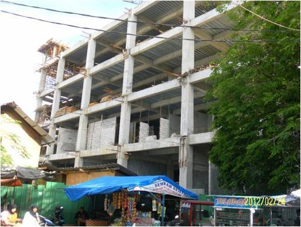
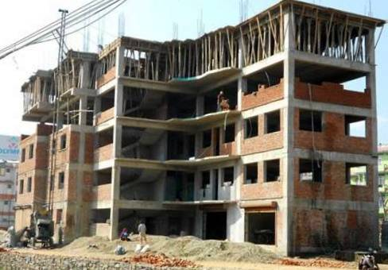
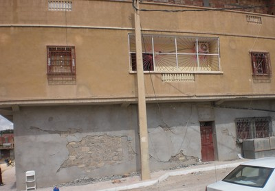

Pórtico relleno [LFINF]
Un marco de vigas y columnas en las que algunas bahías de marcos se rellenan con muros de mampostería que pueden o no estar conectado mecánicamente a la estructura. Debido a la gran rigidez y resistencia en sus planos, las paredes de relleno no permiten que las vigas y columnas se doblen bajo cargas horizontales, cambiando el comportamiento estructural del marco. Durante un terremoto, bielas de compresión diagonal se forman en los rellenos por lo que la estructura se comporta más como un marco arriostrado en lugar de un marco resistente a momento. La altura de los muros de relleno puede ser parcial respecto a la altura de los pisos o llenar completamente el marco.

Un dibujo simplificado de una estructura de pórtico relleno (adapted from: A. Charleson, Seismic Design for Architects, Architectural Press 2008, p64 fig. 5.2). Deben estar presente vigas y no sólo forjados.

Sección parcial de una estructura de pórtico relleno

Estructura de hormigón armado con muros de relleno de mampostería de ladrillo India (A. Charleson)

Estructura de hormigón armado con rellenos de mampostería de ladrillo en construcción , India (S. Brzev)

Reforzado edificio estructura de hormigón con paredes de relleno de bloques de hormigón, Padang, Indonesia (J. Bothara)

R Edifico de estructura de hormigón armado con paredes de relleno de ladrillo en construcción, Kathmandu, Nepal (J. Bothara)

Estructura de hormigón armado infilled con paneles de mampostería de piedra in M'Sila damaged in the 2010 Algeria earthquake (M. Farsi)

Este edificio de marco de hormigón armado con rellenos de teja de barro huecos en Argel estaba en construcción en el momento del terremoto de Boumerdes 2003, Algeria, y sufrió daños a nivel del primer piso (S. Brzev)

Edificio de pórticos de concreto reforzado con rellenos de mampostería hueca, Uganda (E. Lemkuhl)

Pórtico de concreto reforzado con rellenos de mampostería, Tangier, Morocco (C. Scawthorn)

Detalles de un pórtico de concreto reforzado con rellenos de mampostería hueca, Rabbat, Morocco (C. Scawthorn)

Pórtico de concreto reforzado con rellenos de mampostería bajo construcción, Vietnam (C. Scawthorn)